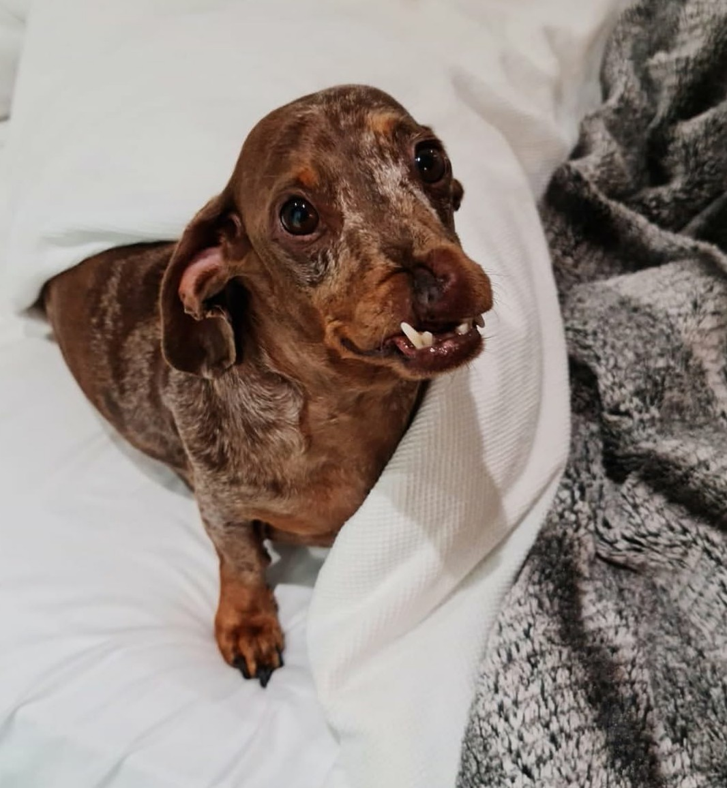
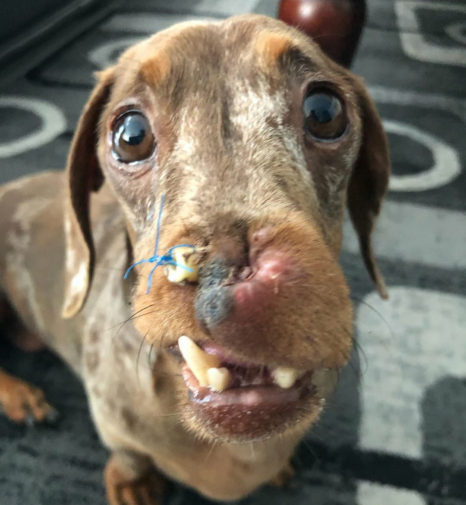
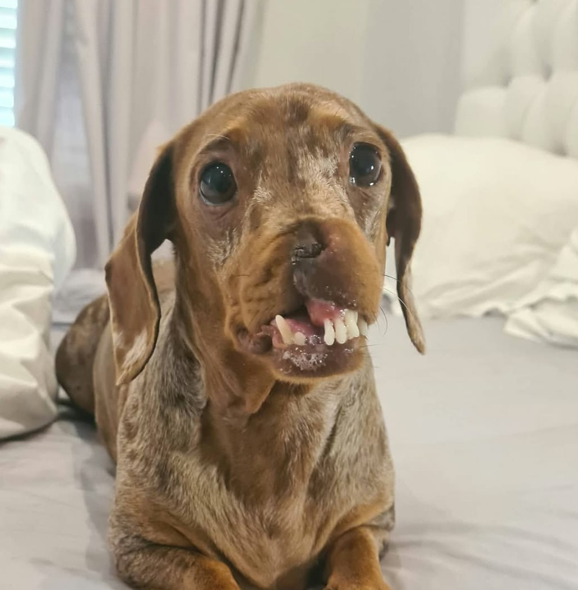
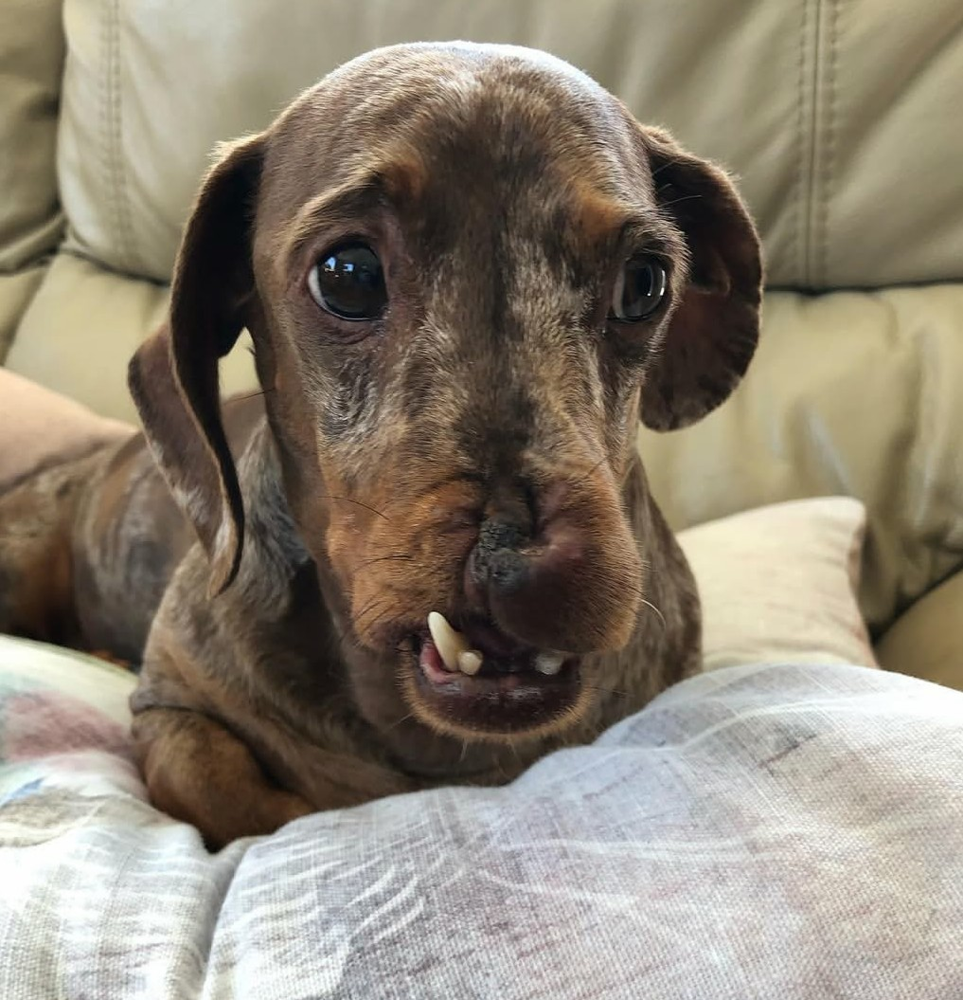
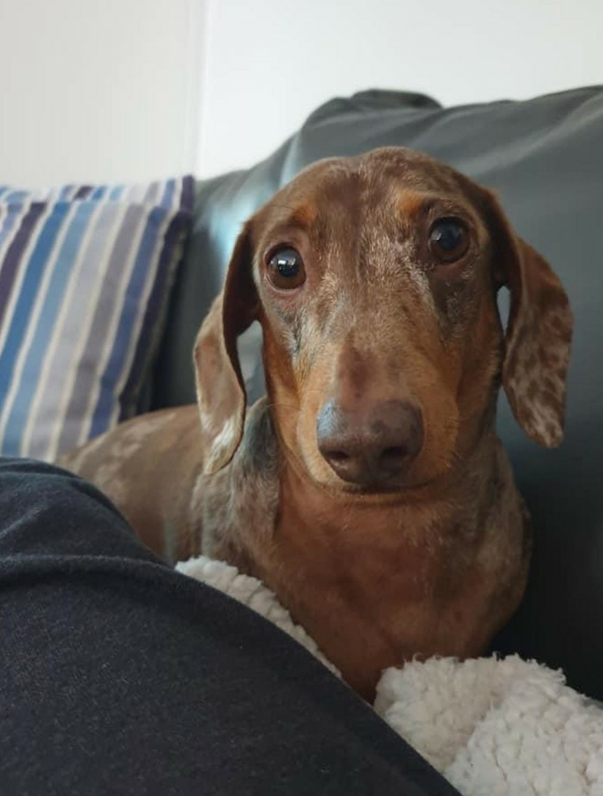

🌸 The Little Blessing
Pebbles was born in 2019. From the moment she came into our lives,
we believed we had received a beautiful blessing. ❤️
She was full of life, innocence and love. Pebbles was not just a dog.
She became part of our family and brought happiness into our lives.

💔 The Day Everything Changed
When Pebbles was only 3 years old, tragedy struck. 😭
She was involved in a terrible accident that changed her life forever.
The happy and healthy dog we knew was suddenly facing serious injuries
and an uncertain future.
It was heartbreaking to see her suffer, but we refused to give up on her.

🏥 We Tried to Give Her Life Back
We did everything we could to help Pebbles.
We tried to get the surgery and medical care she needed so that
she could have a chance to return to a normal life.
There were difficult moments, tears, fear and uncertainty —
but we continued to hope. ❤️🩹
Because when an animal depends on you, giving up is not an option.

🌟 Pebbles Still Has Hope
Look into Pebbles' eyes and you can see something that words cannot
fully explain.
She has been through so much, yet she is still here.
She deserves the chance to heal, to be comfortable and to feel loved.
She deserves to enjoy the simple things every dog should experience —
running, playing, resting peacefully and being surrounded by people
who care.

🙏 Please Help Pebbles
Pebbles' journey is not over.
We are asking kind-hearted people to stand with her and help us
give her the care she needs.
Every donation, no matter how small, can make a difference.
If you cannot donate, please share Pebbles' story.
Your share could reach someone who can help save her life.

❤️ Give Pebbles a Second Chance
Pebbles was born as a blessing in 2019.
After everything she has endured, we believe she still deserves
a chance at a better life.
We are fighting for Pebbles because her life matters.
Please help us give Pebbles that chance. 🐾❤️
🐶 Help Pebbles Today
If you can donate, your support can help Pebbles receive the care
she needs.
If you cannot donate, please share her story with others.
❤️ DONATE TO PEBBLES